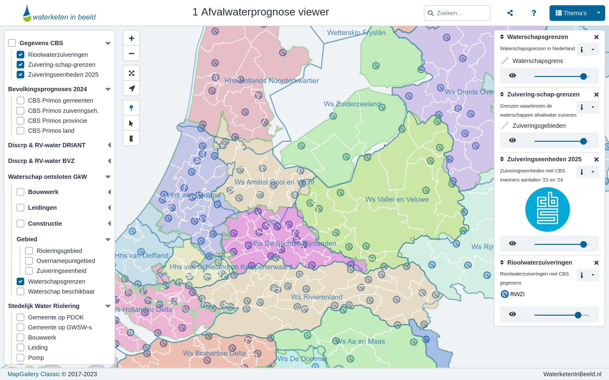

Afvalwater Prognoseviewer
De “Afvalwater Prognoseviewer”: inzicht in de waterketen met MapGallery
Waterbeheerorganisaties in Nederland staan voor grote uitdagingen: toenemende bevolkingsgroei, veranderende bedrijfsstructuren, klimaatadaptatie, en steeds strengere Europese eisen voor afvalwaterzuivering. Prognoses van hoeveel afvalwater er komt — en wat de precieze samenstelling is — zijn cruciaal om slimme investeringen te doen.
Tot voor kort werkten organisaties vaak met verschillende methodieken, gespreide datasets en uiteenlopende systemen. Er was behoefte aan één centraal, visueel platform dat landelijke data combineert met lokale gegevens.
De Afvalwater Prognoseviewer in MapGallery
Met MapGallery als kaart-viewerplatform is de “Afvalwater Prognoseviewer” gerealiseerd: een online applicatie waarin de afvalwaterketen van Nederland in kaart is gebracht. Via deze viewer kunnen gebruikers geografische kaartlagen bekijken, zoals alle 316 rioolwaterzuiveringen (RWZI’s) van Nederland, inclusief kengetallen uit o.a. Centraal Bureau voor de Statistiek (CBS): aantal inwoners, drinkwaterverbruik, type bedrijven dat loost, etc.
Het Waterschapshuis: De Afvalwaterprognose viewer triggert het juiste gesprek
Daarnaast werkt het initiatief in samenwerking met Waterketen in Beeld (WKIB), een organisatie die gespecialiseerd is in het inzichtelijk maken van de complexe afvalwaterketen “in kaart, getal, informatie en verhaal”. Gebruikers kunnen inzoomen op nationale schaal, waterschapsniveau of zelfs straatniveau, en grafieken en tabellen opvragen voor zuiveringseenheden die niet altijd samenvallen met gemeentegrenzen.

Het resultaat
Eenduidigheid en samenwerking: Met één centrale kaartviewer delen waterschappen en gemeenten data, rekenmethoden en inzichten — wat leidt tot consistentere prognoses.
Betere beslissingen voor investeringen: Door inzicht in actuele en toekomstige afvalwaterstromen kunnen organisaties beter plannen voor uitbreiding of aanpassing van zuiveringsinstallaties.
Toegankelijkheid van data: Landelijke datasets, kengetallen en grafieken worden binnen één interface overzichtelijk beschikbaar. De kaart- en dataviewer maakt de complexe afvalwaterketen visueel begrijpelijk.
Efficiëntie en toekomstbestendigheid: De tool vervangt versnipperde spreadsheets en ad-hoc analyse door een gestandaardiseerde, herbruikbare infrastructuur.
Waarom MapGallery?
Compatibel met geografische kaartlagen (WMS/WFS/GeoServices) en standaarden volgens OGC.
- Gebruiksvriendelijke interface waardoor ook niet-GIS-specialisten inzicht verkrijgen.
- Flexibele schaal: van nationaal overzicht tot detailniveau straat of zuiveringseenheid.
- Mogelijkheid tot data-download via API’s of GeoServices voor verdere integratie.
Vooruitblik
De Community of Practice Afvalwaterprognoses (CoP) werkt ondertussen aan verdere uitbreiding. Zo wordt toegewerkt naar het ontsluiten van meer kengetallen voor riolerings- en bemalingsgebieden, evenals de beschikbaarheid van extra modules en instrumenten, waaronder een discrepantietool voor rioolvreemd water en real-time analyses. Daarnaast wordt gewerkt aan een bredere openstelling van onderdelen van de viewer en de mogelijkheid om data te downloaden voor gemeenten en andere betrokken stakeholders.